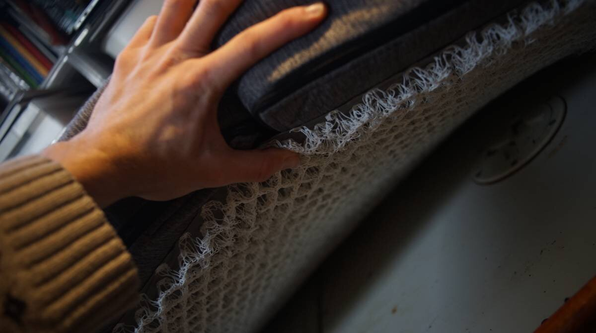

upholstery

- Choosing upholstery foam
- Choosing upholstery fabric
- Buying fabric
- Cutting foam
- Moisture Prevention Underliner
Cushions make up a large portion of a sailboat, the v-berth, saloon and quarter berths are covered in cushions. When they start to deterioriate the space becomes less pleasant to live in, and if the foam and fabric are especially old, molds and dust mites can be a problem.
See our upholstery projects:
Replacing cushions and covers yourself is hard work, but learning to do it, getting a good sewing machine, is still cheaper than asking someone else to do it, and then you walk away with new skills and tools to do many more projects.
What foam and fabric to get?
choosing upholstery foam
Foam Density. A liveboard boat gets more use, which ought to be considered when choosing a foam density. Higher density foams(which have less air in them) are higher quality and last longer. Sailrite recommends using a foam with a density of 1.13kg(2.5lbs) minimum. They also recommend layering foams(glued together) with different firmness ratings, with a firmer foam at the bottom that acts as a sort of box spring, although more comfortable it does bring up the cost considerably.
Foam Thickness. What thickness to choose depends on the available space(our saloon won't allow anything thicker than 4 inches) and your personal preference. Thickness varies from 2-15cm(1-6in).
Foam Material. Commonly memory foam is made from polyurethane, but some people choose Latex(especially for bedding) because of its durability and its antimicrobial properties. Memory foam is cheap, but Latex is costly.
choosing upholstery fabric
Beautifully-patterned fabric matters, but so does durability, comfort, and mildew-resistance.
If re-using foam, the existing foam can be used to make a template but otherwise measuring the space and making templates is necessary.
Durability
"Fabric wear rating is usually expressed in double rubs. Double rubs are found through a mechanized test called the Wyzenbeek Test. The Wyzenbeek Test is regarded as the standard of measuring abrasion resistance for fabric in North America. With this method, a piece of cotton or wire is placed on a special machine and rubbed against the fabric being tested in a back and forth motion along the warp and weft until signs of wear are present." [Source]
Anything rated above 30,000+ double rubs is considered heavy duty and ideal for living rooms or heavily trafficked areas, for boats 50,000+ double rubs is even better.
Looking at the double rub rating isn't the only important factor, there is also fiber content, how often the fabric is used, the fabric's weave, and cleaning instructions that ought to be considered.
Mildew-resistance
To avoid mildew, avoid natural fibers(cotton, cotton blends) and choose synthetics like acrylic, olefin or polyester.
Dust mite sensitivity
If sensitive to dust mites choose a cover fabric that is tightly-woven.[Source], which will keep dust mites from entering the foam. Latex does not keep dust mites out(it only keeps molds from growing inside it).
Buying Fabric
Measure all of the cushions onboard the boat. Take note of the width of your desired fabric, the length will depend on how much fabric is needed for the project (boxings, top plates and bottom plates). To find out how much fabric to buy use Sailrite's Fabric Calculator. Keep in mind that if pattern direction is important, you'll have to orient the cushions in the same direction when measuring the amount of fabric you'll need.

Cutting Foam
Foam stores use a foam-cutting tool that is a bit expensive to consider (unless you make a business of it), others use hot knives.
It is possible to use a bread knife with a serrated blade, although there is a special technique used to get clean cuts, see this video on how to do it.
It's also possible to use hacksaw blades to do it.
It is difficult for us to recommend a tool because we have not had to cut foam ourselves yet(we kept a lot of our existing foam, so far), but we thought we'd mention what we found during our research. We will have to cut foam someday and we'll update this bit to say what works best.
moisture prevention underliner

In winter, living on a plastic boat means having to fight condensation. Insulation plays a bit part in limiting condensation, but allowing air to flow is just as important.
We got sheets of high-strength mesh material called Hypervent that helps elevate cushions, promoting good air flow which can help reduced condensation as well mildew/mold growth. This material is made from a series thickly-coiled polypropylene strands, which creates a firm but open surface through which air can flow. The woven mat is topped by a light synthetic fabric layer that provides a smooth surface for a cushion to rest on.
The material can be cut larger than the cushion width and length on sides that come into contact with the hull so that air can flow all around the cushion.
This material is lightweight, and can be cut with heavy scissors(although Hypervent isn't super uniform so making perfectly straight cuts isn't easy). When cutting little bits of stiff material will come off, be sure to scoop those up afterwards. Sheets are a maximum of 99cm (39 in) wide, but can be joined together to cover the size of a cushion.

Even with this material in place, lifting the cushions once in a while to let them air out is good practice.
Notes. There are many similar alternatives to Hypervent on the market(HyperDrii, or Sailrite's material) we chose it not because we think it is the best, but because it's what was available locally and what was within reasonable walking distance of our mooring spot (we bought it at FoamZone in Victoria BC). This is not a cheap option(at $24.75 CAD/30cm|1 ft), but it is useful to protect newly re-upholstered cushions (we will experiment with it and will report here on how well it performs).